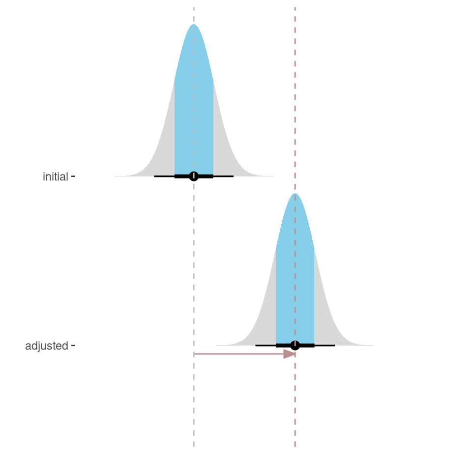
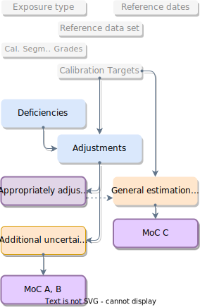
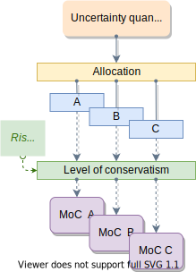
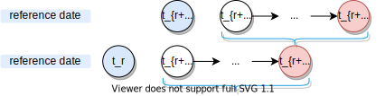
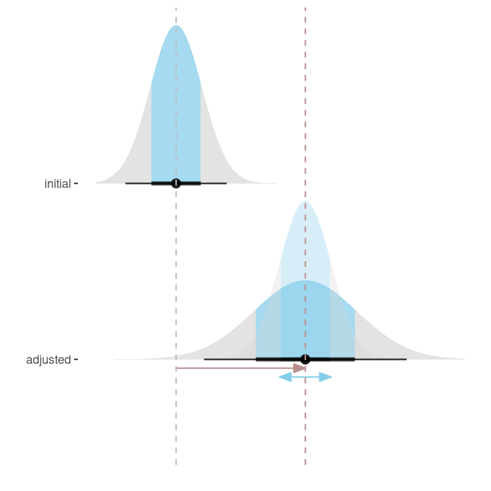
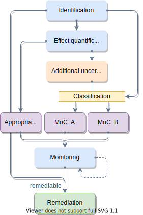
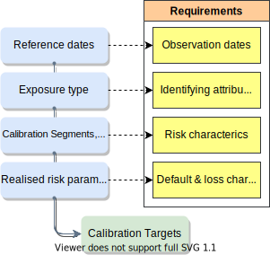
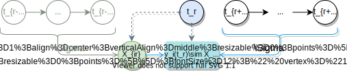

MoC & Downturn LGD
Day 2
November 21, 2022
Day 2
13:00
13:30
14:15
15:00
15:15
16:00
16:45
Quiz & Recap
General Estimation Error
Deficiencies
Break
Appropriate Adjustments
Additional Uncertainties
Case Study Explanation
Recap of day 1
Risk Parameter Quantification
- Type of Exposures
- homogeneously managed, comparable risk characteristics
- Reference dates
- Date to which realised values are aggregated
- Calibration Target
- long-run average (LRA) default rate, (LRA/DT) LGD, CCF calculated based on RDS prior to adjustments
- Appropriate Adjustment
- Modeled effect on CT of drivers of non-representativeness & other sources of bias
- Appropriately Adjusted Calibration Target
- Calibration Target adjusted for biases

MoC Quantification
MoC Quantification
- Initial Calibration Target (CT)
- long-run average (LRA) default rate, (LRA/DT) LGD, CCF calculated estimated based on RDS prior to adjustments
- MoC C
- Margin to account for statistical uncertainty of calibration target estimate in the absence of potential biases due to deficiencies
- Deficiency
- Source of bias relative to initial calibration target
- Appropriately adjusted calibration target
- Calibration target adjusted for biases due to deficiencies
- MoC B
- Margin to account for additional uncertainty due to adjustment for non-representativeness
- MoC A
- Margin to account for additional uncertainty due to other deficiencies

MoC Quantification
- MoC Categories (A, B, C)
- allocation of uncertainties for MoC quantification
- (Model) Risk Appetite
- Sets (additional) capital requirements in relation to credit risk due to model uncertainty
- Level of conservatism
- how the MoC relates to the estimation uncertainty; e.g., a confidence level
- MoC A, B, C
- required to be quantified, applied, reported, monitored separately

General Estimation Error
General Estimation Error
- The statistical estimator
- Calibration Target; (weighted) average default/loss/conversion rate
- General estimation error
- Uncertainty not due to deficiencies; standard error of statistical estimator
EBA/GL/2017/16 \(\S\) 42
The final MoC on a risk parameter estimate should reflect the uncertainty of the estimation in all of the following categories: \(\small{[\cdots]}\) Category C: the general estimation error.
EBA/GL/2017/16 \(\S\) 43.
In order to quantify MoC institutions should \(\small{[\cdots]}\) quantify the general estimation error of category C referred to in paragraph 42 associated with the underlying estimation method at least for every calibration segment; the MoC for the general estimation error should reflect the dispersion of the distribution of the statistical estimator.
General Estimation Error
- The statistical estimator
- Calibration Target; (weighted) average default/loss/conversion rate
- General estimation error
- Uncertainty not due to deficiencies; standard error of statistical estimator
General Estimation Error
- The statistical estimator
- Calibration Target; (weighted) average default/loss/conversion rate
- General estimation error
- Uncertainty not due to deficiencies; standard error of statistical estimator
- MoC C “reflects” general estimation error
- EBA explicitly allows for flexibility
- ECB more explicit
EBA/GL/2017/16 \(\S\) 43.
In order to quantify MoC institutions should \(\small{[\cdots]}\) quantify the general estimation error of category C referred to in paragraph 42 associated with the underlying estimation method at least for every calibration segment; the MoC for the general estimation error should reflect the dispersion of the distribution of the statistical estimator.
ECB Guide to Internal Models (CR) \(\S\) 140
(a) This MoC should be based on the distribution of the estimator, which is the average of one-year default rates of the grade/pool across time (i.e. the distribution of \((\Sigma\text{DR}_t)/T\), considering that the uncertainty is primarily driven by the statistical uncertainty of each one-year default rate and the length of the time series. As a result, it is expected that the lower the number of observations per grade and the shorter the time series are, the higher the MoC of the grade should be.
(b) Similarly, for LGD and CCF, \(\small{[\cdots]}\) uncertainty is primarily driven by the statistical uncertainty of the observations used to compute the long-run and downturn estimates and the length of the time series
General Estimation Error
- The statistical estimator
- Calibration Target; (weighted) average default/loss/conversion rate
- General estimation error
- Uncertainty not due to deficiencies; standard error of statistical estimator
\[\text{DR}_{\text{LRA}} = \frac{1}{R}\sum_{r=1\dots R}\frac{1}{N_\mathbf{L}(t_r)}\sum_{i\in\mathbf{L}} \text{D}_i(t_r)\]
\[\text{LGD}_{\text{LRA}} = \frac{1}{N_\mathbf{L}}\sum_{i\in\mathbf{L}} \text{RLGD}_i\]
\[\text{CCF}_{\text{LRA}} = \frac{1}{R}\sum_{r=1\dots R}\frac{1}{N_\mathbf{L}(t_r)}\sum_{i\in\mathbf{L}} \text{CCF}_i(t_r)\]
General Estimation Error
\[\text{var}(\text{DR}_{\text{LRA}}) = \frac{1}{R^2}\sum_{r=1\dots R}\text{var}(\frac{1}{N_L(t_r)}\sum_{i\in\mathbf{L}} \text{D}_i(t_r))\]
\[\text{var}(\text{LGD}_{\text{LRA}}) = \frac{1}{N_\mathbf{L}}\text{var}(\sum_{i\in\mathbf{L}} \text{RLGD}_i)\]
\[\text{var}(\text{CCF}_{\text{LRA}}) = \frac{1}{R^2}\sum_{r=1\dots R}\text{var}(\frac{1}{N_L(t_r)}\sum_{i\in\mathbf{L}} \text{CCF}_i(t_r))\]
Assuming i.i.d. \(\text{D}_i\), \(\text{RLGD}_i\), \(\text{CCF}_i\)
General Estimation Error
\[\text{var}(\text{DR}_{\text{LRA}}) = \frac{1}{R^2}\sum_{r=1\dots R}\frac{1}{N^2_r}\text{var}(\sum_{i\in\mathbf{L}}\text{D}_{ir}))\]
\[\text{var}(\text{LGD}_{\text{LRA}}) = \frac{1}{N^2_\mathbf{L}}\text{var}(\sum_{i\in\mathbf{L}} \text{RLGD}_i)\]
\[\text{var}(\text{CCF}_{\text{LRA}}) = \frac{1}{R^2}\sum_{r=1\dots R}\frac{1}{N_r}\text{var}(\sum_{i\in\mathbf{L}}\text{CCF}_{ir}))\]
Assuming i.i.d. \(\text{D}_{ir}\), \(\text{RLGD}_i\), \(\text{CCF}_{ir}\)
Assuming \(R\) independent draws (\(\text{cov}(\text{X}_r,\text{X}_s)_{r\neq s}\rightarrow 0\))
General Estimation Error
\[\text{var}(\text{DR}_{\text{LRA}}) = \frac{1}{R^2}\sum_{r=1\dots R}\frac{1}{N_r}\pi_{r}(1-\pi_{r})\]
\[\text{var}(\text{LGD}_{\text{LRA}}) = \frac{1}{N_\mathbf{L}}\sigma^2(\text{RLGD})\]
\[\text{var}(\text{CCF}_{\text{LRA}}) = \frac{1}{R^2}\sum_{r=1\dots R}\frac{1}{N_r}\sigma_r^2(CCF))\]
Assuming i.i.d. \(\text{D}_{ir}\), \(\text{RLGD}_{ir}\), \(\text{CCF}_{ir}\)
Assuming \(R\) independent draws (\(\text{cov}(\text{X}_r,\text{X}_s)_{r\neq s}\rightarrow 0\))
Assuming \(\text{D}_{ir} \sim \text{Binomial}(1,\pi_r)\)
General Estimation Error
\[\text{var}(\text{DR}_{\text{LRA}}) = \frac{1}{R^2}\sum_{r=1\dots R}\frac{1}{N_r}\pi_{r}(1-\pi_{r})\]
\[\text{var}(\text{LGD}_{\text{LRA}}) = \frac{1}{N_\mathbf{L}}\sigma^2(\text{RLGD})\]
\[\text{var}(\text{CCF}_{\text{LRA}}) = \frac{1}{R^2}\sum_{r=1\dots R}\frac{1}{N_r}\sigma_r^2(CCF))\]
Assuming i.i.d. \(\text{D}_{ir}\), \(\text{RLGD}_{ir}\), \(\text{CCF}_{ir}\)
Assuming \(R\) independent draws (\(\text{cov}(\text{X}_r,\text{X}_s)_{r\neq s}\rightarrow 0\))
Assuming \(\text{D}_{ir} \sim \text{Binomial}(1,\pi_r)\)
Assuming known \(N_r\), \(R\)
General Estimation Error
\[\hat{\sigma}^2(\text{DR}_{\text{LRA}}) = \frac{1}{R^2}\sum_{r=1\dots R}\frac{1}{N_r-1}\text{DR}_{r}(1-\text{DR}_{r})\]
\[\hat{\sigma}^2(\text{LGD}_{\text{LRA}}) = \frac{1}{N_\mathbf{L}-1}s^2(\text{RLGD})\]
\[\hat{\sigma}^2(\text{CCF}_{\text{LRA}}) = \frac{1}{R^2}\sum_{r=1\dots R}\frac{1}{N_r-1}s_r^2(CCF_r))\]
Assuming i.i.d. \(\text{D}_i\), \(\text{RLGD}_i\), \(\text{CCF}_i\)
Assuming \(R\) independent draws (\(\text{cov}(\text{X}_r,\text{X}_s)_{r\neq s}\rightarrow 0\))
Assuming \(\text{D}_{ir} \sim \text{Binomial}(1,\pi_r)\)
Assuming known \(N_r\), \(R\)
Unbiased estimators of the variance of the mean (Bessel’s)
General Estimation Error
\(\hat{\sigma}^2(\text{DR}_{\text{LRA}})\), \(\hat{\sigma}^2(\text{LGD}_{\text{LRA}})\), \(\hat{\sigma}^2(\text{CCF}_{\text{LRA}})\)
Assuming i.i.d. \(\text{D}_i\), \(\text{RLGD}_i\), \(\text{CCF}_i\)
- Cond. independence of \(\text{D}_i\), \(\text{RLGD}_i\), \(\text{CCF}_i\) assumed by required statistical estimator
- Connected clients
Assuming \(R\) independent draws
Assuming \(\text{D}_{ir} \sim \text{Binomial}(1,\pi_r)\)
Unbiased estimators of the variance of the mean
General Estimation Error
Assuming i.i.d. \(\text{D}_i\), \(\text{RLGD}_i\), \(\text{CCF}_i\)
Assuming \(R\) independent draws
- Overlapping observation windows \(\rightarrow\) auto-correlation
Assuming \(\text{D}_{ir} \sim \text{Binomial}(1,\pi_r)\)
Unbiased estimators of the variance of the mean
ECB Guide to Internal Models (CR) \(\S\) 140
(a) \(\small{[\cdots]}\) Institutions need to be aware of and deal adequately with the dependency between default rates over time on the quantification of the MoC, e.g. when using overlapping windows for the calculation of default rates.
General Estimation Error
Assuming \(R\) independent draws
- Overlapping observation windows \(\rightarrow\) auto-correlation
Strategies
- Non-overlapping sample
- Non-overlapping resampling scheme
- Explicitly model / correct for auto-correlation bias
pros
- simple
- non-parametric
- explicit
cons
- biased
- complex
- possibly not identifiable
General Estimation Error
Assuming i.i.d. \(\text{D}_i\), \(\text{RLGD}_i\), \(\text{CCF}_i\)
Assuming \(R\) independent draws
Assuming \(\text{D}_{ir} \sim \text{Binomial}(1,\pi_r)\)
- Sampling without replacement \(\text{D}_r \sim \text{Hypergeometric}(N_r,\pi^{\prime}_r)\)
Unbiased estimators of the variance of the mean
Due to fast convergence \(\text{Hypergeometric}\rightarrow\text{Binomial}\), relevant for small \(N_r\), large \(\pi_r\) only.
General Estimation Error
\(\hat{\sigma}^2(\text{DR}_{\text{LRA}})\), \(\hat{\sigma}^2(\text{LGD}_{\text{LRA}})\), \(\hat{\sigma}^2(\text{CCF}_{\text{LRA}})\)
Assuming i.i.d. \(\text{D}_i\), \(\text{RLGD}_i\), \(\text{CCF}_i\)
Assuming \(R\) independent draws
Assuming \(\text{D}_{ir} \sim \text{Binomial}(1,\pi_r)\)
Assuming known \(N_r\), \(R\)
Biased estimators of the std err of the mean
General Estimation Error
\[\hat{\sigma}^2(\text{DR}_{\text{LRA}}) = \frac{1}{R^2}\sum_{r=1\dots R}\frac{1}{N_r-1}\text{DR}_{r}(1-\text{DR}_{r})\]
\[\hat{\sigma}^2(\text{LGD}_{\text{LRA}}) = \frac{1}{N_\mathbf{L}-1}s^2(\text{RLGD})\]
\[\hat{\sigma}^2(\text{CCF}_{\text{LRA}}) = \frac{1}{R^2}\sum_{r=1\dots R}\frac{1}{N_r-1}s_r^2(CCF_r))\]
Biased estimators of the std err of the mean
- E.g. if \(s^2=0\) or \(\text{DR}_r=0\)
- Asympotically unbiased estimators \(\nsim\) uncertainty of specific estimate
General Estimation Error
\[\frac{1}{R^2}\sum_{r=1\dots R}\frac{1}{N_r-1}\text{DR}_{r}(1-\text{DR}_{r})\]
Biased estimators of the std err of the mean
\[\int^\alpha \text{Beta}(D_r + \frac{1}{2}, N_r – D_r + \frac{1}{2})\]
Posterior interval based on non-informative (conservative) Jeffrey’s prior for binomial parameter
Treatment of deficiencies
Treatment of deficiencies
- Deficiency
- any driver of potential bias and increased uncertainty
- Bias in the quantification
- Effect of the deficiency on the statistical estimator relative to the estimated risk parameter (may be \(\approx 0\))
EBA/GL/2017/16 \(\S\) 36.
Institutions should identify all deficiencies related to the estimation of risk parameters that lead to a bias in the quantification of those parameters or to an increased uncertainty that is not fully captured by the general estimation error
Treatment of deficiencies
- Deficiency
- any driver of potential bias and increased uncertainty
- Bias in the quantification
- Effect of the deficiency on the statistical estimator relative to the estimated risk parameter (may be \(\approx 0\))
- Additional uncertainty
- uncertainty attributed to uncertainty in the estimated effect size
- Not captured by the general estimation error
- non-zero for \(N_r, R \rightarrow \infty\)
EBA/GL/2017/16 \(\S\) 36.
Institutions should identify all deficiencies related to the estimation of risk parameters that lead to a bias in the quantification of those parameters or to an increased uncertainty that is not fully captured by the general estimation error

Treatment of deficiencies
- Identification
- a process that provides a guarantee of identifying all deficiencies
- Effect quantification
- Estimation of effect of the deficiency on the statistical estimator
- Additional uncertainty
- uncertainty attributed to uncertainty in the estimated effect size
- Classification / allocation
- Attribution of additional uncertainty to specific types of deficiencies

Identification
- Identification
- a process that provides a guarantee for identifying all deficiencies
EBA/GL/2017/16 \(\S\) 36.
Institutions should identify all deficiencies related to the estimation of risk parameters
- Leverage existing controls (Review of Est., DQ monitoring, MV)
- Ensure & document minimally considered deficiencies
- Identify requirements in order to establish deficiencies
Data Quality & Completeness
Missing or inaccurate…
- reference dates
- attributes identifying type of exposures
- (risk) characteristics \(X_{ir}\) for assigning exposures
- loss & default characteristics \(\text{y}_{i}(t_r)\)
- over observation windows
- cash flows


Model performance & accuracy
In case of…
- Biases at level of calibration
\(\rightarrow\) change method of calibration (remediation)
- Biases at more granular level
- Non-homogeneity of grades /
\(\rightarrow\) representativeness in terms of risk characteristics (see next)
No double-counting with general estimation error!